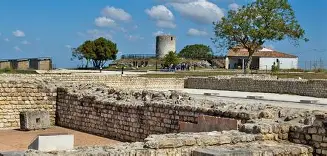
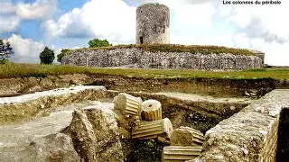
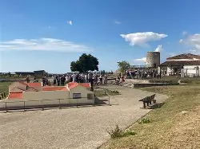
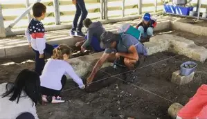

Mercredi 6 Novembre, 14h00 :
- Atelier "Lampe à Huile et Ténèbres" : Fabrique ta propre lampe à huile en argile pour éclairer les longues nuits d'hiver. (Durée : 1h30. Supplément 5€.)




Profitez de la fin de saison pour (re)découvrir le Musée et Site Archéologique de l'Océanède avant la fermeture annuelle. Voici le programme complet des visites et animations prévues :
(Ouverture : Mercredi, Samedi, Dimanche et Vacances de Toussaint de 10h30 à 17h00)
Ces ateliers se déroulent dans la salle pédagogique du musée. Nombre de places limité.